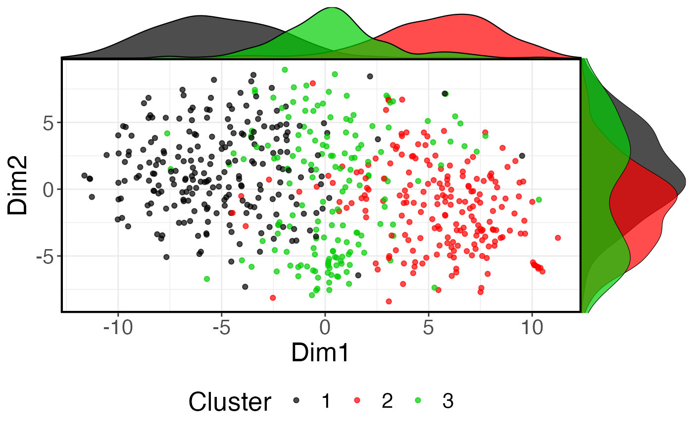

plot PCA, tSNE, and CIDR reduced datasets
plot_reduced( reduced_dat, color_fac = NULL, dims = c(1, 2), dimNames = c("Dim1", "Dim2"), palletes = NULL, legend_title = "Cluster" )
| reduced_dat | is a matrix with genes in rows and cells in columns |
|---|---|
| color_fac | is a vector of colors corresponding to clusters to determine colors of scattered plots |
| dims | an integer of the number of dimestions |
| dimNames | a vector of the names of the dimensions |
| palletes | can be a customised color pallete that determine colors for density plots, if NULL it will use RColorBrewer colorRampPalette(RColorBrewer::brewer.pal(sample_num, 'Set1'))(sample_num) |
| legend_title | title of the plot's legend |
a matrix with the top 20 CIDR dimensions
day2 <- day_2_cardio_cell_sample mixedpop1 <-new_scGPS_object(ExpressionMatrix = day2$dat2_counts, GeneMetadata = day2$dat2geneInfo, CellMetadata = day2$dat2_clusters) #CIDR_dim <-CIDR(expression.matrix=assay(mixedpop1)) #p <- plot_reduced(CIDR_dim, color_fac = factor(colData(mixedpop1)[,1]), # palletes = seq_len(length(unique(colData(mixedpop1)[,1])))) #plot(p) tSNE_dim <-tSNE(expression.mat=assay(mixedpop1))#>#>#>p2 <- plot_reduced(tSNE_dim, color_fac = factor(colData(mixedpop1)[,1]), palletes = seq_len(length(unique(colData(mixedpop1)[,1]))))#> Warning: Use of `reduced_dat_toPlot$Dim1` is discouraged. Use `Dim1` instead.#> Warning: Use of `reduced_dat_toPlot$Dim2` is discouraged. Use `Dim2` instead.